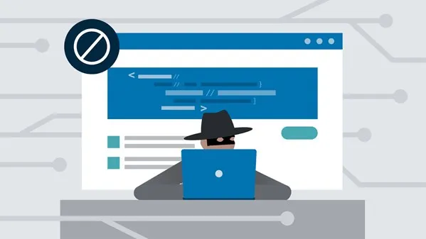
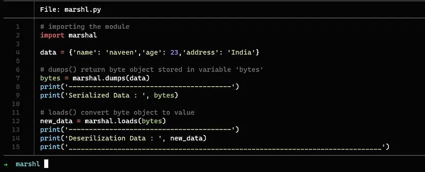

A pentester’s guide to insecure deserialization.

Introduction
Insecure Deserialization is a vulnerability that occurs when untrusted data is used to abuse the logic of an application, inflict a denial of service (DoS) attack, or even execute arbitrary code upon it being deserialized. It also occupies the #8 spot in the OWASP Top 10 2017 list.
To understand what insecure deserialization is, we first must understand what serialization and deserialization are. We’ll then cover some examples of insecure deserialization and how it can be used to execute code as well as discuss some possible mitigations for this class of vulnerability.
Serialization vs deserialization
Serialization is the process of turning some object into a data format that can be restored later. People often serialize those objects to save them to storage or send them as part of communications.

Deserialization is the reverse of that process, taking data structured from some format, and rebuilding it into an object. Today, the most popular data format for serializing data is JSON. Before that, it was XML.
What is insecure deserialization?
Let’s first understand the whole picture here. When you learn a programming language, the first thing you learn is how to define variables, classes, and data structures that best suit your needs. Then, you learn how to manipulate them to achieve your needs. So far, they reside in memory, but sometimes, you need to store their states or share them with other systems. That’s where serialization and deserialization come into play.
What can go wrong here?
When a software deserializes the user-controlled data without verification, we call it insecure deserialization. For example, an attacker might store a serialized file representing a malicious payload. The developer doesn’t perform a verification before deserializing the serialized data, then insecure deserialization will occur.
Most programming languages offer the ability to customize deserialization processes. Unfortunately, it’s frequently possible for an attacker to abuse these deserialization features when the application is deserializing untrusted data that the attacker controls.
Java serialization and deserialization example:-
The following is an example of the serialization and deserialization process in java.
This is a simple java class file in which the variables are declared
The following below code will perform the basic serialization and deserialization process with the same objects created in the above code.

Serializing the objects:-

The above code performs the serialization of the objects which are provided in the code.
Deserializing the data:-

The above code performs the deserialization of the data which was serialized before.
Let’s Run:-
Let’s run the program to see how java serializes the data. Once the program is compiled without error the java class files will be created as below:

Now we can run the basic program,
The program executed successfully. The objects we gave as input to the program are age, name, and nickname of a human being is serialized and stored in the file as humandata.ser.
Let's view the serialized data and see if we can figure out anything from it
Serialized data in normal view
Serialized data in Hex format

The above example is a serialized data and this is the same date that has been piped directly into the deserialization process without any verification. This is where the insecure deserialization vulnerability occurs.
Python serialization and deserialization example:-
The following is an example of serialization and deserialization in Python by using the python module for binary serialization and deserialization.

dumps() − returns a byte like an object by marshaling a Python object. Only objects of standard data types are supported for marshaling. Unsupported types raise the ValueError exception.
loads() − This function converts the byte-like object to the corresponding Python object. If the conversion doesn’t result in a valid Python object, ValueError or TypeError may be raised.
Serialized and Deserialized data:-

The above is the serialized and deserialized data using the marshal python module. The marshal module uses dumps() function to serialize the data and uses loads() function to deserialize them.
Insecure Deserialization to Remote Code Execution:-
The following is an example of insecure deserialization in Python. Python’s native module for binary serialization and deserialization is called pickle. This example will serialize an exploit to run the whoami and date command, and deserialize it with pickle.loads().
Example code to perform RCE
The dumps() function gets input, serializes it, and piped to the deserialization function. The serialized data is directly piped to the loads() function to perform the deserialization process without any validation.
Let’s Run:-
Remote Code Execution

The above image shows the serialized data of the remote code execution command whoami and date.
The loads() function accepts the user-controlled serialized data without any verification in place which results in arbitrary code execution on the target.
Example Codes Repository:-
What is the impact of insecure deserialization?
The impact of insecure deserialization can be very severe because it provides an entry point to a massively increased attack surface. It allows an attacker to reuse existing application code in harmful ways, resulting in numerous other vulnerabilities, often remote code execution.
Even in cases where remote code execution is not possible, insecure deserialization can lead to privilege escalation, arbitrary file access, and denial-of-service attacks.
Insecure deserialization tools.
There are many tools that can assist you when you are hunting for insecure deserialization vulnerabilities. In the case of Java, you can use the Java Deserialization Scanner Burp Suite extension. It allows you to test for different libraries using predefined POP gadget chains. Then, you can use Ysoserial to generate the appropriate payload. Therefore, I think that the most valuable tool for this vulnerability would be a good deal of white-box testing, patience, and analysis skills.
How to prevent insecure deserialization vulnerabilities?
- Deserialization of user input should be avoided unless absolutely necessary.
- If you do need to deserialize data from untrusted sources, incorporate robust measures to make sure that the data has not been tampered with.
- If possible, you should avoid using generic deserialization features altogether.
- The method of serialization should be encrypted not encoded.
- Maintain integrity checks to prevent data tampering with the serialized objects.
- Run Deserialization code in a low privilege environment.
- Implementing integrity checks such as digital signatures on any serialized objects to prevent hostile object creation or data tampering.
- Log deserialization exceptions and failures, such as where the incoming type is not the expected type, or the deserialization throws exceptions.
Insecure deserialization Hackerone reports
- https://hackerone.com/reports/562335
- https://hackerone.com/reports/153026
- https://hackerone.com/reports/415682
- https://hackerone.com/reports/350401
- https://hackerone.com/reports/350418
References:-
- https://thehackerish.com/insecure-deserialization-explained-with-examples/
- https://owasp.org/www-project-top-ten/2017/A8_2017-Insecure_Deserialization
- https://cheatsheetseries.owasp.org/cheatsheets/Deserialization_Cheat_Sheet.html
- https://portswigger.net/web-security/deserialization
Thank you for reading.
Follow me on Twitter : thevillagehacker